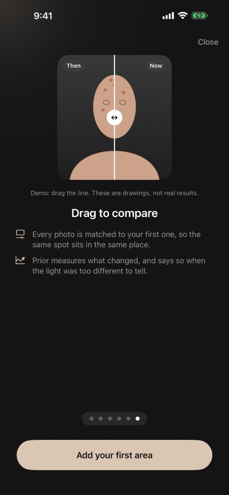
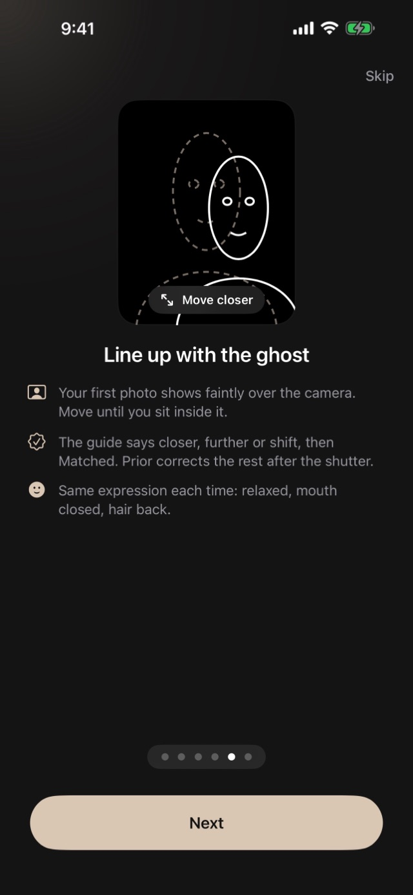
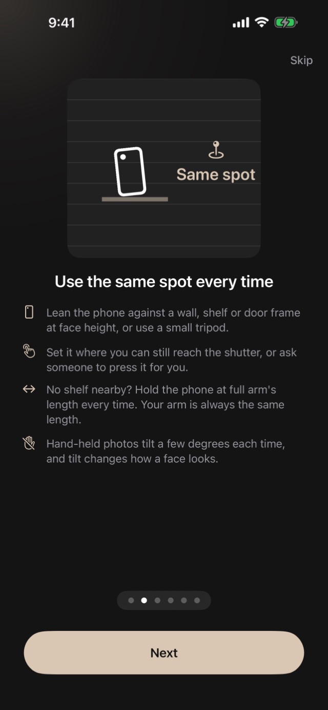
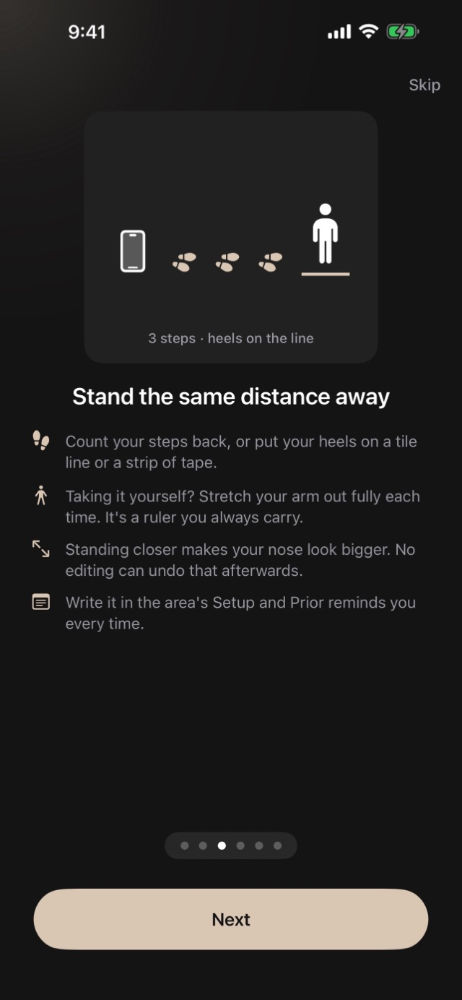
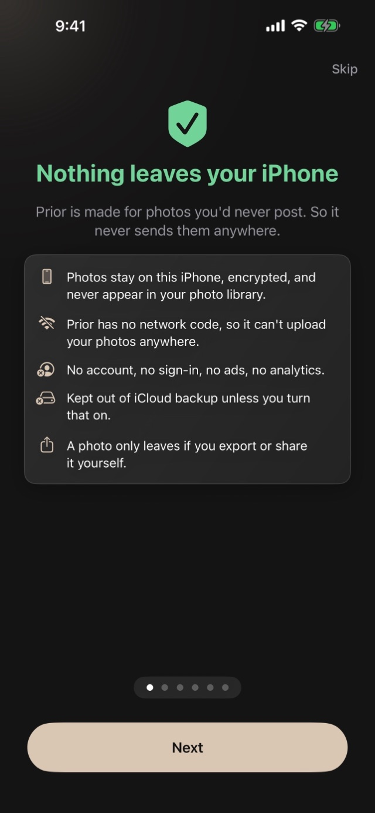

Before-and-after photos of your face and body, lined up so they're truly comparable: same framing, same light, aligned automatically. Encrypted on your iPhone, never uploaded.
For iPhone. Free to try · Unlock once, no subscription.

A brighter room looks like better skin. Standing closer changes the shape of a face. A beauty filter smooths what you're trying to track. Prior is built to take those out of the comparison.
Your first photo sets the camera profile. Exposure, white balance and zoom are locked and reapplied every time, so a lamp can't pass for progress.
A faint ghost of your first photo sits over the live camera, with a guide that says move closer, tilt or shift until you match it.
After the shutter, each photo is aligned to your first one by facial landmarks, body position or image detail. Still off? Nudge it by hand.

Matching photos takes a small routine. Prior walks you through it with animated demos the first time you open it.


Your first comparison appears with your second photo. From then on, your whole timeline is a swipe away.
48 face and body areas, each with its own alignment, or name your own.
Turn on the optional, experimental Measurements and Prior reports five things per region (lines, redness, tone evenness, texture and pores) as a change from your first photo, in plain language, with the method stated.
If two photos differ too much in brightness, contrast or colour of light, Prior says so and shows nothing. A number driven by a lamp is worse than no number.
There's no skin score, no "years younger", and no AI judging how you look. Below each metric's noise floor, Prior says "no measurable change".
On iPhones with Apple Intelligence, you can turn on a short written reading of your numbers, generated on your device. It never sees your photos.
Note what was done, the dose, who did it and what it cost, right next to the photos.
Gentle nudges timed from your last photo, so your timeline stays even.
Everything runs on your iPhone, including alignment and analysis.
Nothing leaves your iPhone

No subscription, no ads. Photos you take during the trial are never locked: you can always view, compare and export them.
One area and four photos (a first photo plus three comparisons), with every feature.
A single in-app purchase for unlimited areas, photos and comparisons. Yours for good.
No. Prior compares photos. It never retouches, filters or beautifies them. It aligns them, and that's all.
Yes. Import them from your library and they're aligned and shown in your timeline. Measurements use only photos taken in Prior, because only those have a known camera profile.
By default they live only on your iPhone, so they'd be gone. If keeping them matters more to you, turn on encrypted iCloud backup in Settings.
No. Prior measures change between photographs. It doesn't diagnose anything and isn't a substitute for a clinician.
iPhone, and it works fully offline.
The sooner you take it, the further back your timeline goes.